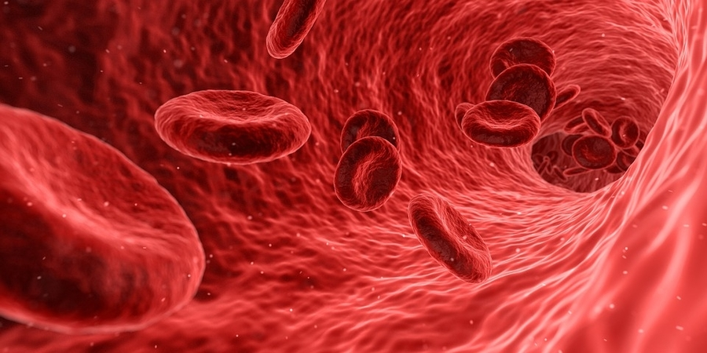

using machine learning to algorithmically track blood vessels without manual input

The tracking of blood vessels in medical images is a crucial step in the construction of patient-specific geometric models for hemodynamic simulations. The current pipeline for vessel tracking is labor-intensive and time-consuming, requiring manual intervention at multiple stages. Our research aims to automate this process by leveraging machine learning techniques to algorithmically track blood vessels, thereby streamlining the model construction pipeline and reducing the burden on researchers and clinicians.
The primary objective of this research is to output a 3D centerline of the blood vessel. A centerline is a curve that runs through the center of the vessel, providing a simplified representation of its trajectory and geometry. In our case we wish to also contain radius information along the centerline, to provide a more complete representation of the vessel.
Applications of the 3D centerline are many and include patient-specific hemodynamic simulations, surgical planning, and medical education.
We take a local approach to the problem, processing only a small segment of a blood vessel at a time. The problem is then defined as follows:
Input: A local 3D medical image volume containing a segment of the blood vessel of interest. Potentially we also have some information from previous segments, such as a seed point, direction, radius or a partial centerline.
Output: The next step to move to, and the radius of the vessel at that point. Potentially, there are multiple steps to move to, in the case of a bifurcation.
We use a combination of deep learning neural networks and traditional image processing techniques to achieve this. The ideas we are exploring include:
Deep Learning for Segmentation + Surface Processing: We use deep learning neural networks to segment the blood vessel from the surrounding tissue in the local image volume. This segmentation provides the necessary information to extract the centerline and radius of the vessel. We then move along the local centerline.
Deep Learning to Predict Next Points: This is a more direct approach, where we use deep learning to predict the next point to move to, given the current point and the local image volume. The difficulty here are bifurcations, where multiple points must be predicted, and some order must be chosen.
Deep Learning to Predict Centerline: This approach is somewhere between the two above. We use deep learning to predict the centerline of the vessel, and then move along this centerline. In order to do that we must represent the centerline in a way that is suitable for deep learning, and then train a model to predict that representation based on the local image volume.